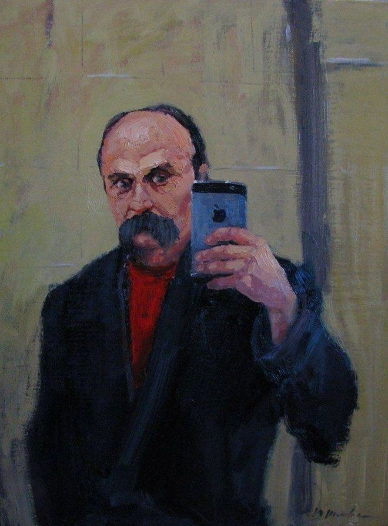

Taras Shevchenko
The best writer

Love your Ukraine. Love her... During the rage. At the last, difficult moment, pray to the Lord for her
The main dates about Shevchenko
- 1814 - February 25 (March 9, AD). In the village. A son Taras was born in Moryntsi, Zvenyhorod district, Kyiv region, in the family of Hryhoriy Ivanovych Shevchenko, a serf of the landowner Engelhardt.
- 1815 - December. The family of Hryhoriy Ivanovych Shevchenko moved from the village of Moryntsi to the village of Kirilovka, where Shevchenko spent his childhood.
- 1816 - March 9. The Shevchenko serf family was included in the lists during the next government census. Among Hryhoriy Shevchenko's children are two-year-old Taras and his older brother Mykyta.
- 1820 - Summer. Little Taras went out of the village to look for "iron pillars" that "support" the sky, and there he got lost. He was picked up by Chumaks and brought to Kyrylivka in the evening.
- 1822 - Autumn. Parents send Taras to study in a village school to the deacon-teacher Pavel Ruban (Sovgir).
- 1823 - January 29. Taras's sister, Kateryna, married a peasant named Anton Krasytsky in the neighboring village of Zelena Dibrova.
- 1824 - Summer. Little Taras is milking with his father. He mentions this event in his life in the story "The Mercenary".
- 1825 - March 21. Taras's father, Hryhoriy Ivanovych Shevchenko, died.This year Taras Shevchenko goes to Kirillov School to be hired by a teacher-deacon Petro Bohorsky.
- 1829 - Spring. Together with the convoy of the landowner P. Engelhardt, Shevchenko left Vilshany via Kyiv, Chernihiv and Belarus for Lithuania in Vilno.
- 1842 - March. Sends to Ukraine G. Kvitka-Osnovyanenko, V. Zabila, M. Markevich and G. Tarnovsky copies of the poem "Haidamaki".
- 1846 - January 12. Shevchenko is in the village. Moysivtsi together with the poet V. Zabila and the historian M. Markevich. A portrait of O. Shostka by T. Shevchenko was played at the ball in T. Volkhovska.
- 1847 - January 9. Shevchenko leaves Kyiv for Chernihiv region.January. Located in the town of Borzna, on the farm Kukurikivshchyna, where he performs portraits of the Belozerskys and Viktor Zabila.
- 1849 - The beginning of the year. At Kosaral, Shevchenko continues to work on literary works.
- 1854 - April 14. He asks A. Kozachkovsky to send him a monument to Kievan Rus "A Tale of Igor's Regiment", intending to translate it into Ukrainian.
- 1860 - January. Shevchenko's Kobzar has been published.
Scientific study of the life, work and multifaceted activities of Taras Shevchenko, as well as his place in the history of Eastern Europe and in the world literary process - the subject of a separate science of Shevchenko studies. The study of Shevchenko's legacy is an inexhaustible and multifaceted problem, and therefore Shevchenko studies as an interdisciplinary branch of scientific knowledge is marked by various areas of research (biographical, bibliographic, literary, textual, linguistic, lexicographic, art, aesthetic, sociological, psychological, psychological, psychological, psychological, psychological). political, etc.).
For more info check out his Wikipedia entry.